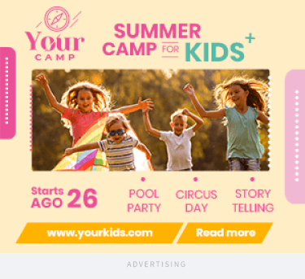
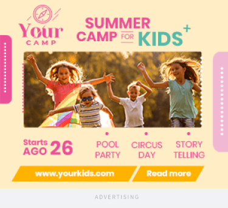

Los padres pueden educar a sus hijos para que sean adultos responsables y maduros
¿Cuáles son los pasos para tomar una decisión?
1. Asignarles tareas sencillas
La primera idea o estrategia para ayudar a los niños a ser responsables es asignarles tareas sencillas. Para que la situación sea más fácil, puede ser conveniente que un adulto también las haga. Por ejemplo, ayudar a lavar los platos o hacer la colada con alguno de los progenitores es una buena manera de empezar. Será el primer paso para que adquieran autonomía: ser sus modelos. Pueden recoger los platos mientras uno de los progenitores los empieza a lavar. Pueden hacer lo mismo con su propia colada, que separen su ropa blanca de la oscura y la lleven hacia los cubos correspondientes. De esta forma, progresivamente, los niños pueden comenzar a adquirir responsabilidades, lo que se trasladará también al uso de la tecnología, hacer los deberes, gestionar mejor su tiempo (trabajos para clase, tiempo para los amigos, juegos, etc.).